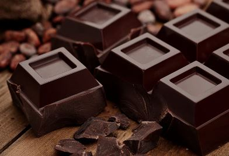

What is Chocolate????
Chocolate is a food product made from roasted and ground cacao seeds. It can be consumed as a liquid, solid or paste either by itself or add to other foods as a flavouring agent.
This food, once considered to be "the food of the gods" once said to be cultivated over more than 3,000 years ago, as a ceremonial beverage by the Maya, Toltec and Aztec people
Health Benefits Of Chocolate
- Increases Heart Health: Due to the antioxidants present in dark chocolate, this can be atributed to the lowering of blood pressure, the reduction in the risk of clotting and increase blood circulation to the heart. This lowers the risks of stroke, coronary heart disease and death from heart disease.
- Balances The Immune System: Flavonols prevent the immune system from going into overdrive and reduce oxidative stress, which is an imbalance caused by cells fighting against free radicals and a common cause of many diseases.
- Combats diabetes:Epicatechin protects cells, makes them stronger and supports the processes that help the body to use insulin better, which might prevent or combat diabetes
- Improves Brain Function:The flavonols in dark chocolate have a positive impact on brain function, which results in a better reaction time, visual-spatial awareness and stronger memory.
- Boosts Athletic Performance:Epicatechin located in dark chocolate increases the production of nitric oxide in the blood, which helps in increased circulation and it reduces the amount of oxygen an athlete uses while engaged in moderately intense exercise. This allows the athlete to maintain workout intensity for longer.
- Reduces Stress:Dark chocolate reportly helps persons feel less stressed, as the stress hormone cortisol seems to be reduced. This also reduction in stress reduces the risk for cardiovascular disease
| The Different Types of Chocolate | ||
|---|---|---|
| Chocolate Type | Description | Image |
| White Chocolate | White chocolate does not contain chocolate liquor or any other cocoa products besides cocoa butter. It doesn’t have a very chocolatey taste, but resembles smooth vanilla. White chocolate contains a minimum 20 percent cocoa butter, a maximum of 55 percent sugar, and about 15 percent milk solids | |
| Cocoa Powder | Cocoa powder is also comprised of 100 percent cacao with no sugar, but has had the cocoa butter extracted out. Cocoa powder is also very bitter, but is commonly used in recipes. It’s a helpful ingredient because it easily mixes in with doughs and batters without having to melt and monitor the chocolate | |
| Bittersweet Chocolate | Bittersweet chocolate must contain at least 35 percent cocoa according to the FDA, but most bittersweet bars contain 50 percent, with others having as much as 80 percent cocoa. This type of chocolate often has a deeper, more bitter flavor than other types of chocolate. | |
| Semisweeet Chocolate | Semisweet chocolate contains at least 35 percent cocoa solids, but there are no official guidelines that govern what can be called “semisweet.” Semisweet chocolate falls somewhere between bittersweet chocolate and sweet dark chocolate. This type of chocolate is most commonly used for baking, but it’s important to follow the recipe to determine whether it calls for semisweet, bittersweet, or baking chocolate | |
| Dark Chocolate | Dark chocolate contains chocolate liquor, sugar, and cocoa butter. It also commonly includes lecithin as an emulsifier and vanilla for flavor. Dark chocolate does not contain any milk solids. The amount of cocoa in dark chocolate bars ranges from 30 percent all the way up to 80 percent. Bittersweet chocolate and semi-sweet chocolate are also technically “dark chocolate,” but are used for baking purposes |  |
| Milk Chocolate | Milk chocolate is perhaps the most popular type of chocolate. It actually contains only ten to 40 percent cacao mixed with sugar and milk (either condensed milk or milk solids). Milk chocolate is much, much sweeter than dark or bitttersweet chocolate and has a lighter color and less-pronounced chocolate taste. However, milk chocolate isn’t great for baking because it’s prone to overheating | |